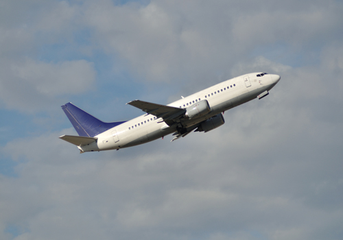

Boeing 737-300
En 1981 inicia el proyecto en Boeing para la versión -300. En 1984 se lanza el prototipo de la aeronave y el 24 de febrero de ese mismo año se realiza su primer vuelo. Fueron fabricadas 1,113 unidades y se tiene registro de 514 aeronaves que continuan en operación. La versión -300 tiene la capacidad para transportar 149 pasajeros en dos secciones del fuselaje del cual también se fabricaron las versiones de carga y militar.
